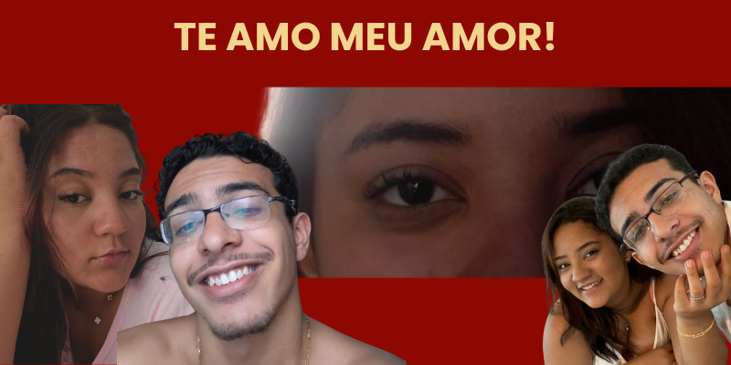

- Entrada no Atheneu (2022)
Em 2022 eu e meu amigo Dudu entramos no Centro de Excêlencia Atheneu Sergipense, era tudo muito grande, muito diferente de todas as escolas que já estudei em toda a minha vida, coisa de outro mundo, logo no primeiro dia eu já conhecia uma menina chamada Karol, que conhecia uma amiga chamada Roberta Kaline e me apresentou a mesma, de início achei ela bem estranha pra falar a verdade, ela era muito elétrica e tinha um visual forte, mas era muito bonita, senti algo aquele dia, mas deixei que esse sentimento evaporasse com o tempo, afinal, eramos apenas amigos, fomos conhecendo a escola juntos, eu, Dudu, Karol e Roberta, o primeiro dia foi bem legal, de primeira caí na mesma sala de acolhimento que Roberta, a sala de música, lá conversamos melhor e vi o quão gente boa ela era, acho que de cara foi uma das pessoas que mais gostei na vida, mais pra frente conhecemos algumas outras pessoas também, como Bea e bruna, mas Roberta não tinha caído na minha sala, ela caiu no 1°A e eu no 1°B, mas assim começou-se uma amizade que iria durar pra sempre.
Esse era parte do nosso grupo, Dudu é o da camisa azul, Roberta é quem está abraçando ele, eu sou o menino de óculos do canto esquerdo, e Bea é a menina de óculos no canto direito.
- Melhores Amigos (2022)
Com o passar dos dias de aula, minha amizade com Roberta só aumentava, mas pelo contrário do que toda amizade era, a gente não se abraçava, não era carinhoso, a gente se xingava, mangava um do outro, porém também sabíamos cuidar um do outro, nós viviamos nos jogando pra outras pessoas, ela me apresentava algumas meninas e eu já apresentei alguns meninos a ela (apesar de ter muito ciúme), seguimos a vida assim, até o fim do 1° ano
- Minha volta para o Atheneu (metade de 2023)
Na metade do ano de 2023, eu voltei para o Atheneu, eu já conversava com o pessoal, então era como se eu estivesse voltando de uma viagem para casa, foi ótimo, caí na mesma sala que Roberta, justamente na mesma sala que ela, eu vi que isso mexeu com ela, nosso relacionamento estava diferente, estavamos mais apegados um ao outro, eu ajudei ela em algo particular que fortaleceu a nossa relação de amizade, estavamos muito intimos, mas eu ainda tinha uns rolos mal acabados, isso irritava ela, porque realmente aquilo me tirava do mey foco que era estudar, depois de um tempo resolvendo esse problema, eu voltei a me aproximar mais dela, a gente passava muito tempo juntos, o grupo já tinha mudado um pouco nesse ponto, entraram algumas pessoas como Daniel, Sulliane, era bem engraçado quando nos reuniamos, mas a maior parte do tempo era eu e Roberta, a gente começou a se vestir parecido, escultar músicas que o outro escultava e quando menos se esperou, opa! eu abracei Roberta?!
- O início do nosso amor & nossos desafios
Eu comecei a abraçar Roberta frequentemente, percebi que precisava daquilo, começamos a andar de mãos dadas, a ficar abraçados um no outro e aí surgiu algo diferente, eu senti amor, eu vi que gostava de Roberta, mas a minha cabeça ainda estava muito confusa sobre aquilo, ela também gostava de mim e um determinado dia ela me beijou, foi ótimo, ela beijou minhas bochechas e depois deu um leve beijo em minha boca, enquanto isso eu jogava Hungry Shark no celular, fiquei nervoso, mas beijei ela de volta, depois disso não parou mais, nos beijamos o dia todo, no dia seguinte eu a pedi em namoro, um pouco emocionado, mas eu não podia perder aquela que parecia ser a melhor chance de encontrar alguém para casar e dividir a vida, eu estava vivendo um filme clichê de romance, que ótimo era viver aquilo, ainda é, o que eu não esperava eram os desafios que surgiam, eu estava confuso como disse anteriormente, achava que estava confundindo amizade com amor, brigamos muito também nessa época, chegamos a terminar, mas voltamos no mesmo dia, era amor, ela me mostrou isso, a partir dali fomos encarando tudo, falsas acusações de manipulação, amizades que queriam me separar dela, pessoas má intencionadas querendo destruir nosso relacionamento, mas nada disso foi capaz de nos separar, nós sempre nos entendemos, sempre conversamos e resolvemos nossos problemas, eu amo isso no nosso relacionamento até hoje.
- A melhor fase
Estamos à 1 ano e 8 meses juntos e tudo tem melhorado cada vez mais, eu tenho estudado mais, tenho sido mais responsável, vejo que a vida dela também parece ter mudado, pra melhor acredito eu, tudo tem sido maravilhoso, discussões acontecem, isso é óbvio, mas nada disso nos faz desistir do nosso namoro que um dia será casamento, eu amo Roberta do fundo da minha alma, por isso crio esse projeto, pra mostrar a ela o tamanho do meu amor, não consigo descrever em palavras, então descrevo em código, eu te amo meu amor, me perdoe por ainda ter falhas que te magoam, mas eu estou melhorando muito e só tenho a agradecer a você por isso, meu amor só cresce e saiba que sempre, repito, sempre, vou fazer o meu máximo por você, estaremos juntos até o último dia de nossas vidas, eu te amo!
